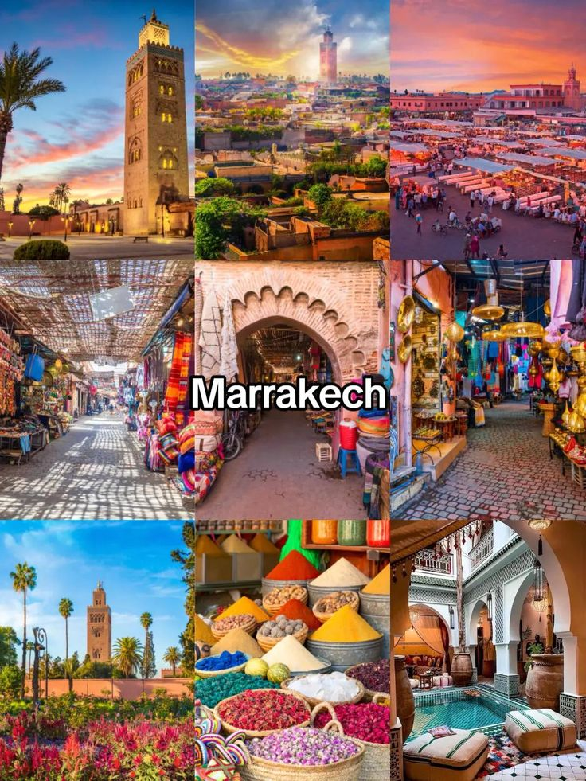
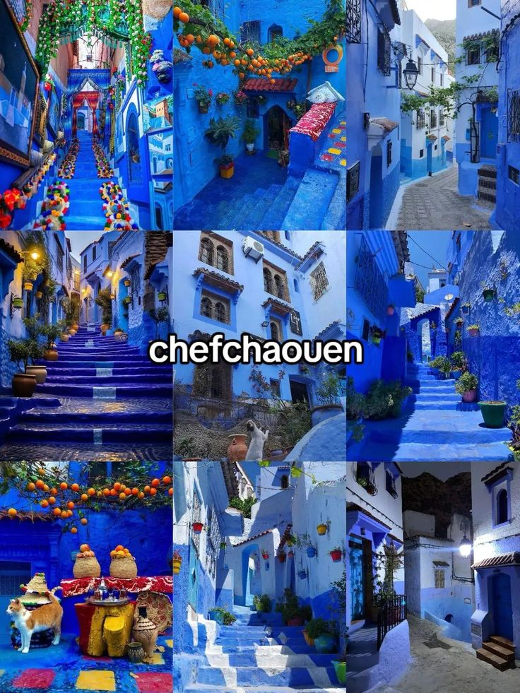
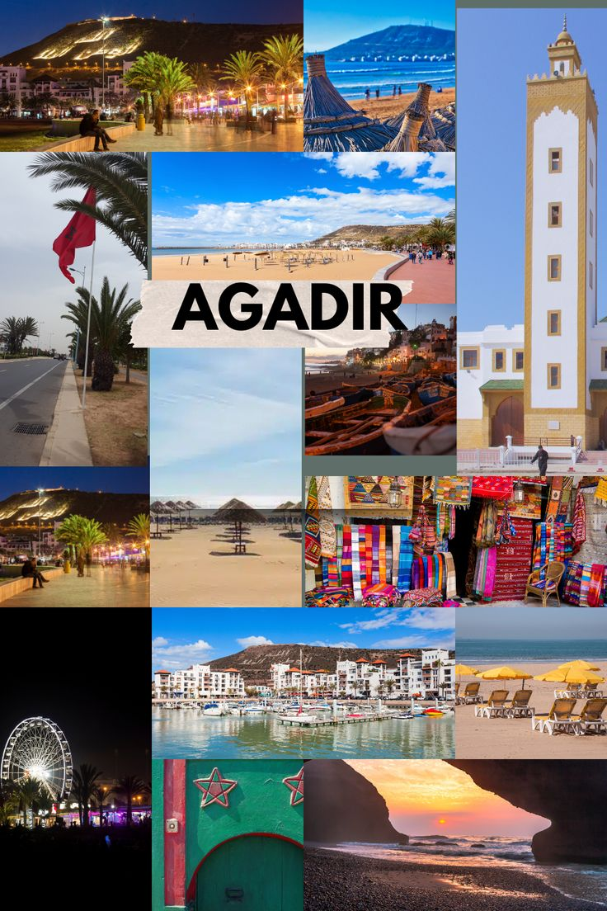
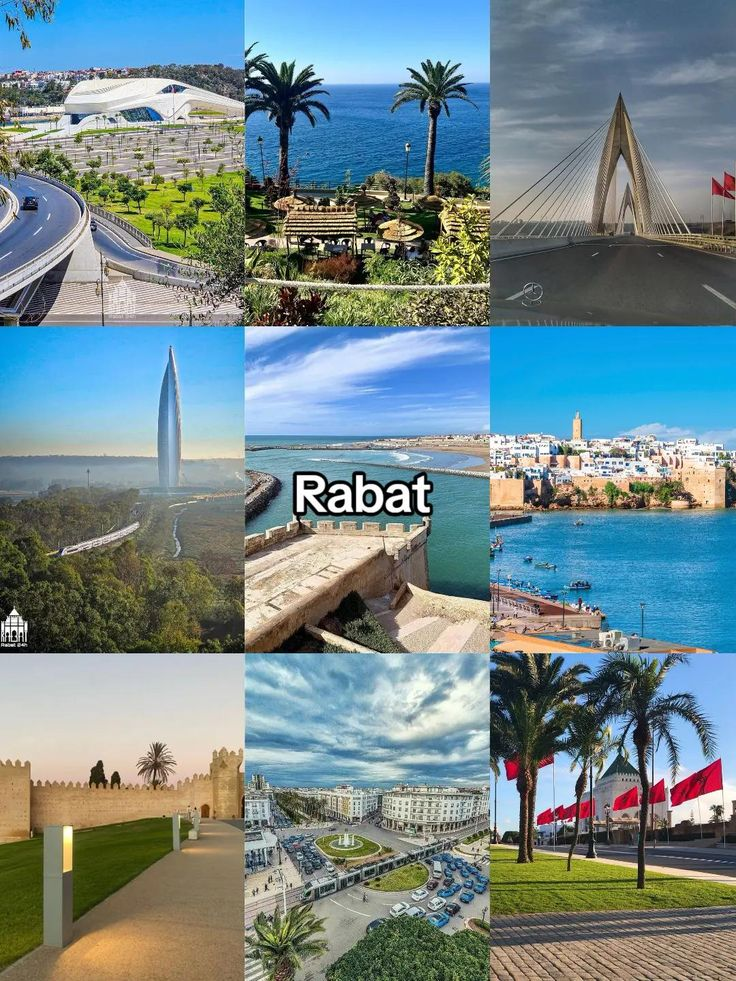
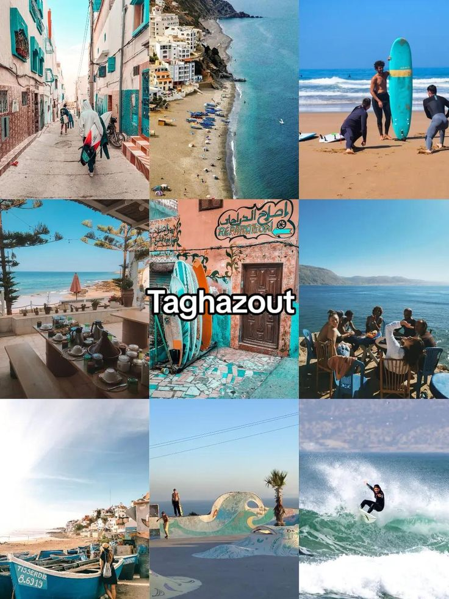
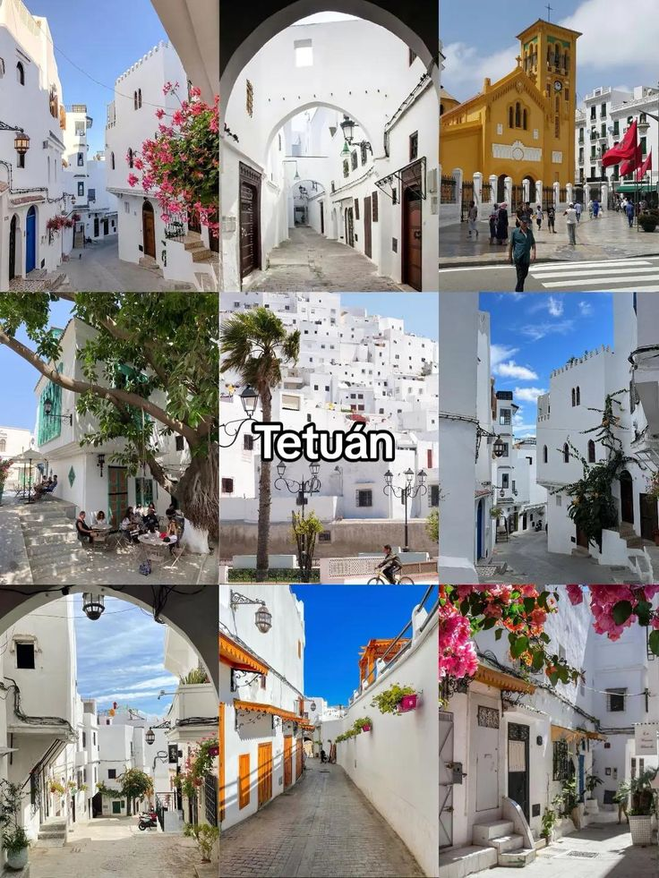
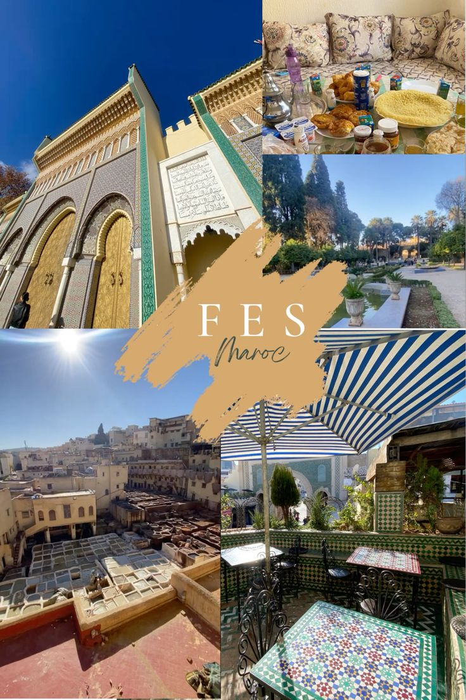
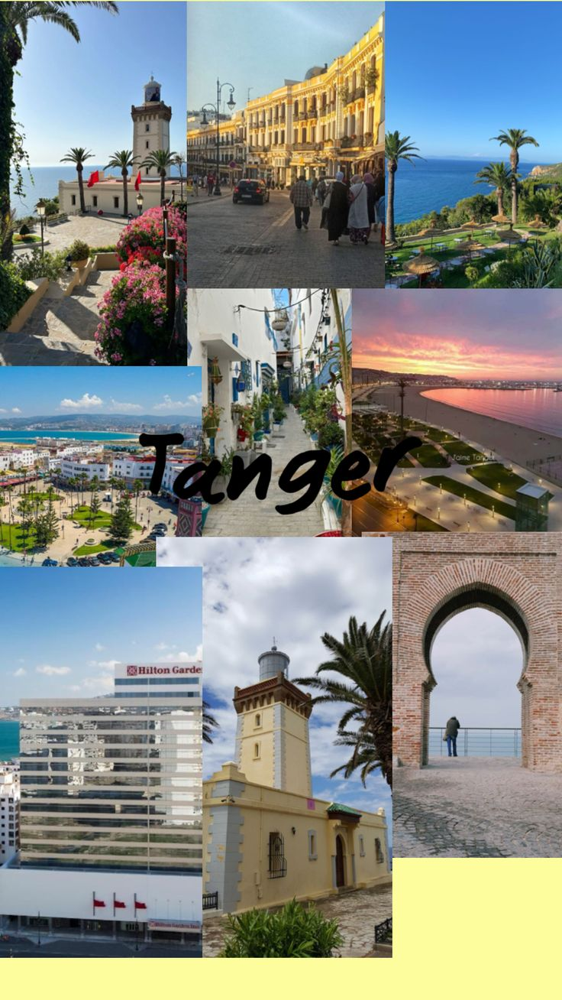
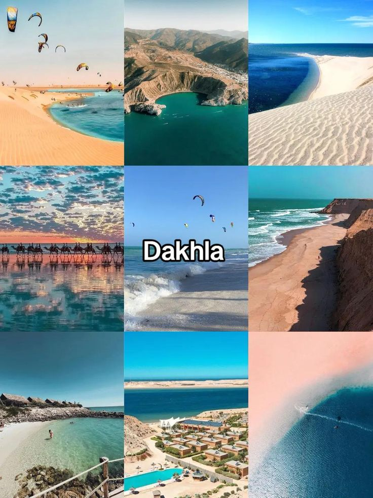

🏙️ Guide des Villes
Découvre les plus belles villes, leur histoire et leurs merveilles naturelles

Marrakech
Marrakech est une ville mythique du Maroc, connue pour ses souks, ses palais et son ambiance unique.
- 🏛 Histoire : fondée au XIe siècle, ancienne capitale impériale.
- 📍 Lieux célèbres : Jemaa el-Fna, Koutoubia, Jardin Majorelle.
- 🌿 Nature : Palmeraie, montagnes de l’Atlas à proximité.

Chefchaouen
Chefchaouen est célèbre pour ses maisons bleues et son atmosphère calme au cœur des montagnes.
- 🏛 Histoire : fondée en 1471 comme ville forteresse.
- 📍 Lieux célèbres : Médina, place Outa el Hammam.
- 🌿 Nature : montagnes du Rif, cascades d’Akchour.

Agadir
Agadir est une ville moderne connue pour ses plages et son climat doux toute l’année.
- 🏛 Histoire : reconstruite après le séisme de 1960.
- 📍 Lieux célèbres : Marina, Kasbah d’Agadir Oufella.
- 🌿 Nature : plages, vallée du Paradis.

Rabat
Rabat est la capitale du Maroc, élégante et calme, entre histoire et modernité.
- 🏛 Histoire : ville impériale, héritage almohade.
- 📍 Lieux célèbres : Tour Hassan, Kasbah des Oudayas, Mausolée Mohammed V.
- 🌿 Nature : plage, fleuve Bouregreg, jardins andalous.
Casablanca
Casablanca est la capitale économique du Maroc, moderne, dynamique et ouverte sur l’océan.
- 🏛 Histoire : développement majeur au XXe siècle.
- 📍 Lieux célèbres : Mosquée Hassan II, Corniche, Morocco Mall.
- 🌿 Nature : plages de l’Atlantique.

Taghazout
Taghazout est un village côtier célèbre pour le surf et son ambiance bohème.
- 🏛 Histoire : ancien village de pêcheurs.
- 📍 Lieux célèbres : Anchor Point, Banana Beach.
- 🌿 Nature : plages, falaises, vallée du Paradis.

Tétouan
Tétouan est une ville andalouse au nord du Maroc, riche en culture et en art.
- 🏛 Histoire : forte influence andalouse.
- 📍 Lieux célèbres : Médina (UNESCO), palais royal.
- 🌿 Nature : montagnes du Rif, plages méditerranéennes.

Fès
Fès est le cœur spirituel et culturel du Maroc, célèbre pour sa médina historique.
- 🏛 Histoire : fondée au IXe siècle.
- 📍 Lieux célèbres : Al Quaraouiyine, tanneries, médina.
- 🌿 Nature : forêts du Moyen Atlas, sources naturelles.

Ifrane
Ifrane est surnommée “la petite Suisse du Maroc”, connue pour sa propreté et sa neige.
- 🏛 Histoire : construite durant le protectorat français.
- 📍 Lieux célèbres : parc d’Ifrane, université Al Akhawayn.
- 🌿 Nature : forêts de cèdres, lacs, stations de ski.

Tanger
Tanger est la porte de l’Afrique, entre Méditerranée et Atlantique.
- 🏛 Histoire : ville internationale mythique.
- 📍 Lieux célèbres : Cap Spartel, grottes d’Hercule, médina.
- 🌿 Nature : falaises, plages, détroit de Gibraltar.

Dakhla
Dakhla est un paradis du kitesurf, entre désert et océan.
- 🏛 Histoire : ancien comptoir saharien.
- 📍 Lieux célèbres : lagune de Dakhla, île du Dragon.
- 🌿 Nature : désert, lagune, plages sauvages.

Al Hoceima
Al Hoceima est une perle de la Méditerranée, célèbre pour ses eaux turquoise et ses paysages naturels.
- 🏛 Histoire : développée durant la période espagnole, au cœur du Rif.
- 📍 Lieux célèbres : plage Quemado, parc national d’Al Hoceima, port.
- 🌿 Nature : falaises, criques sauvages, montagnes du Rif.